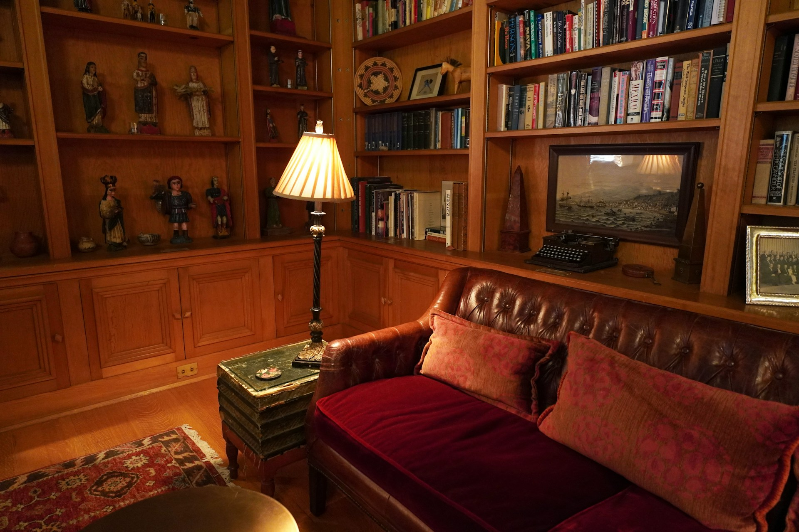
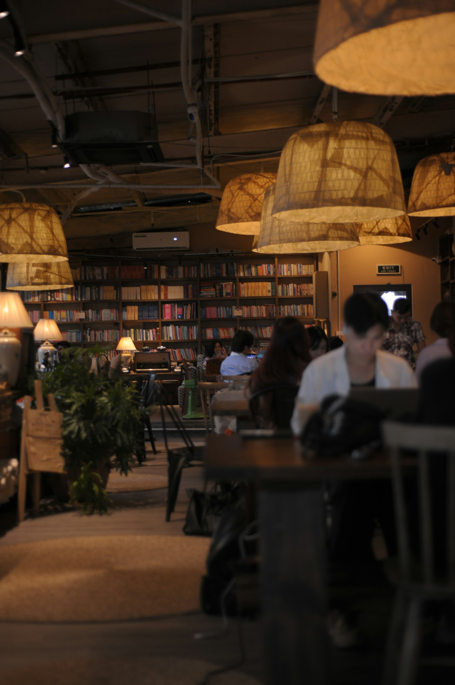

Event

SCROLL
忙しい日常の中で、私たちはどれだけのものを置き去りにしてきたでしょうか。
ふと立ち止まったときに見失っている、自分自身の思い出や、大切にしたい感情。
Komorebi Libraryは、そんな「記憶」を本と共に思い出し、
都会の空気から守られ、温かな光を浴びて心と体を整えるための場所です。
ただのカフェではありません。
ここは、アンティークの家具と深い緑に囲まれ、
あなたが一人の時間を贅沢に味わうための、特別な場所です。
目的に合わせた、2つの空間をご用意しています

静寂のエリア / デジタルデトックス空間
スマートフォンの電源を切り、外界のノイズを遮断するエリアです。
体を包み込むような深いアンティークソファが並び、ほのかな間接照明が手元を照らします。
ここでは、選んだ本の世界に没入したり、ただ静かに自分自身の内面と向き合う時間をお過ごしいただけます。情報から離れ、「思考の巣」でゆっくりと羽を休める体験を提供します。

創造のエリア / PC等使用可能空間
自分自身の思考を形にするための、インスピレーション溢れるエリアです。
重厚な木製のデスクと、手元を優しく照らす真鍮のデスクランプをご用意しています。
PCを開いての仕事、書き物、あるいはクリエイティブな活動に没頭することができます。植物の緑と木漏れ日が、あなたの創造力を静かに後押しします。（Wi-Fi・電源完備）
本棚の片隅から
店主が蒐集した古本や写真集、アートブックなど、約1,000冊の蔵書。自由に手に取り、お席でお楽しみいただけます。

植物・自然

古典文学

デザイン・建築

エッセイ・哲学
日々のお知らせと催し
Cafe ”Komorebi Library”
〒150-0000
東京都渋谷区〇〇 1-2-3 静寂ビル 2F
Open
火 - 金 : 13:00 - 22:00
土・日 : 10:00 - 20:00
※月曜定休
Transport
〇〇駅 南口より徒歩5分
路地裏のレンガ造りの建物の2階です。
週末は混雑が予想されます。お客様の「一人の時間」を大切にするため、
事前のお席のご予約（The Nest / The Studyの指定）をお勧めしております。
※外部の予約システムへ移動します。